3D printing a working analog camera for less then 20€.
This short guide is a walk through my project of a 3D printed camera which uses the cyanotype process. At the end you'll know how to build and use this camera to take satisfying photo negatives (provided you can get the materials and print the camera body available for download below).
If you can't print the 3D parts, the guide is still useful: people have gone through the same process using cameras made with cardboard boxes.
This is the sharpest photo I was able to take, taking 5 hours of exposition during the UV peak:
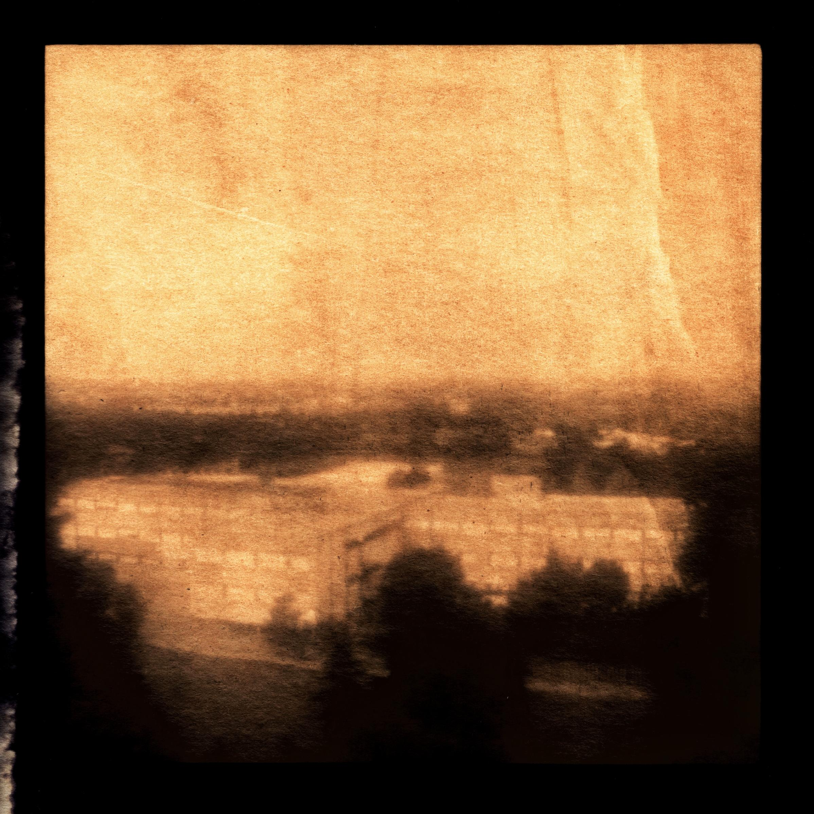
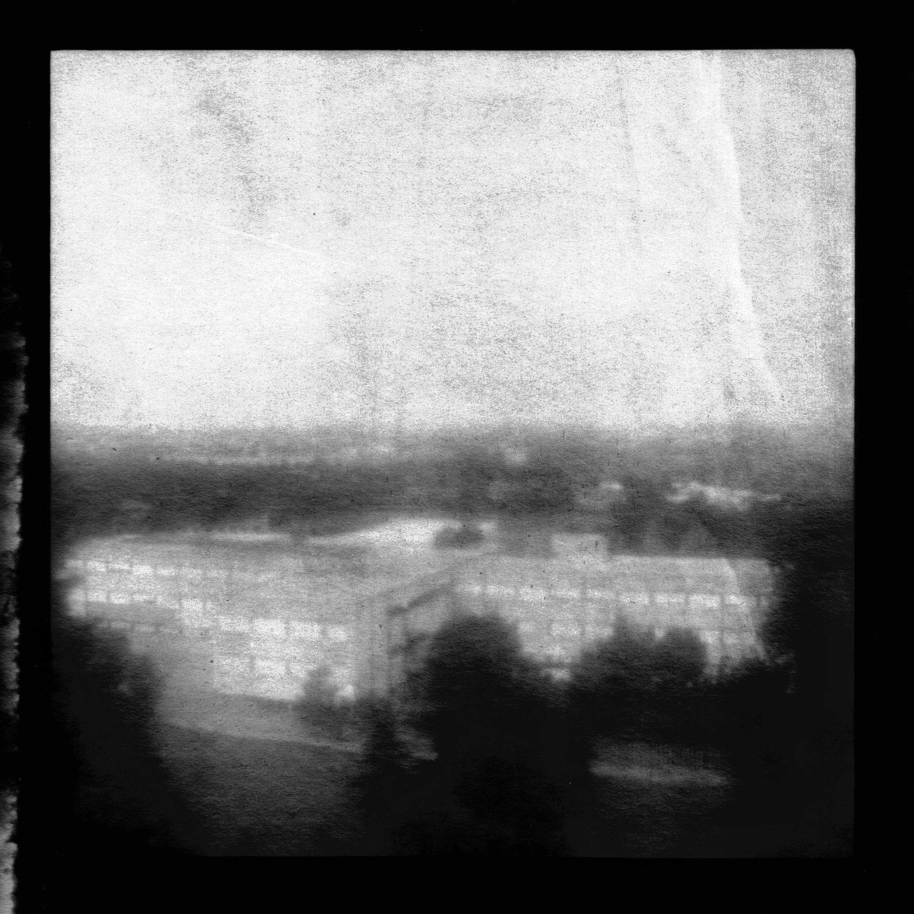
Disclaimers
- Photos will take 1h to 4h of exposure time.
- Cyanotypes are only sensitive to UV light, so you can shoot only around noon, which is when UV peaks during the day.
- UV focuses differently than ordinary visible light, so learning how to focus the camera will take some trial and error.
Pros
- You can develop only using water.
- You don't need a darkroom to prepare photo sheets.
Materials needed
- A 82mm +8 diopters plano-convex lens with a metal thread, specific to my camera design: it's this one from AliExpress; make sure to pick the right one.
- The 3D printed body of the camera, black filament mandatory (the STL files to print it are in the Printing the camera section).
- Glue or tape to attach the front of the camera to its body.
- A cyanotype kit: it's sold online as two bottles labeled A and B. A is ferric ammonium citrate and B is potassium ferricyanide.
- Sheets of> 200 gsm hot press paper: ideally 300 gsm, it needs to be smooth (hot press) to have the finest details possible.
- A brush or a sponge to paint the sheets with the solutions.
- Vinegar and hydrogen peroxide (both optional, explained below in the developing step).
- A smartphone/camera/scanner to scan the photo negative and invert it digitally.
What is cyanotype?
Cyanotype is an alternative photograpic process invented by Sir John Herschel in 1842. It was though as a way to copy star maps and blueprints, to print negatives and make contact prints of still objects such as leaves and plants.
Nevertheless, other people have tried, just like me, to use it to capture images inside cameras.
It's mostly known for producing deep prussian blue images and it's extremely easy to prepare but insanely slow to expose, having an equivalent ISO of around 0.0001.
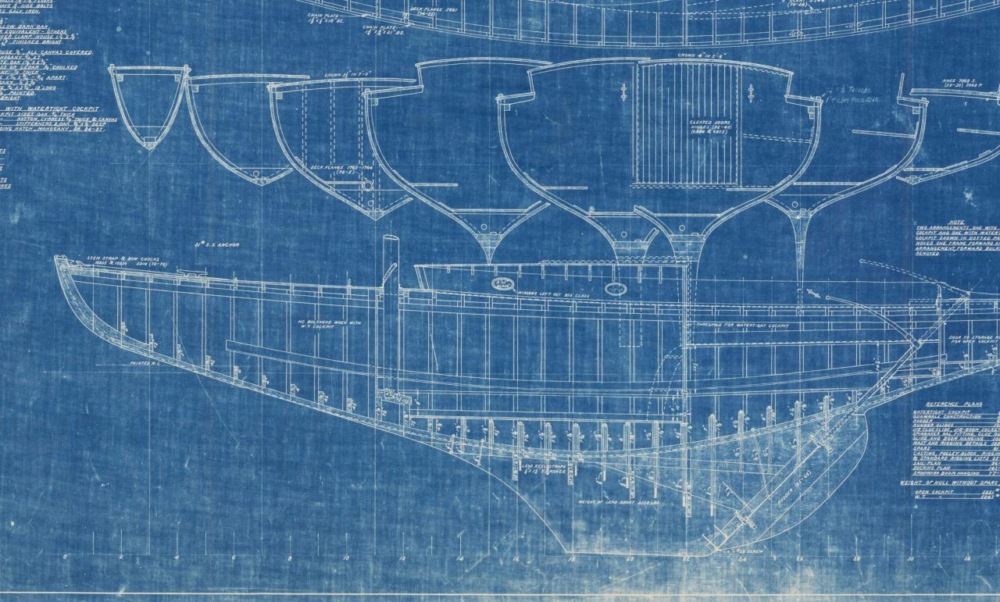
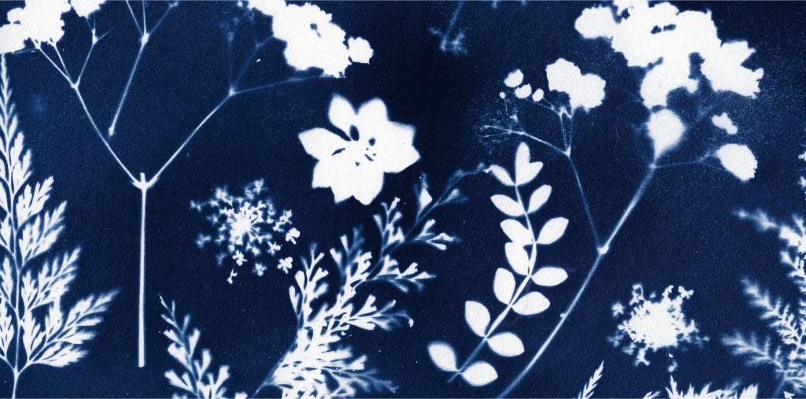
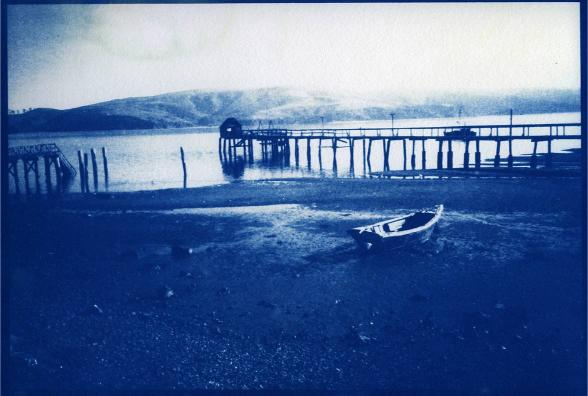
My camera design
I had two nonnegotiable constraints for my design:
- Due to the insensitivity of cyanotypes, there needs to enter as much light as possible inside the camera.
- The photographer needs to be able to focus the image at the chosen distance.
The simplest design that satisfies both of those constraints is a sliding-box camera with a lens as wide as the camera body.
This was a concept I drew on paper:
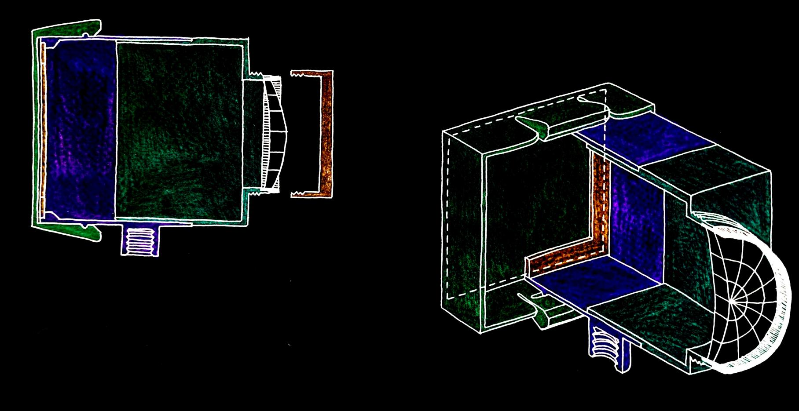
And this is the CAD blueprint I designed:
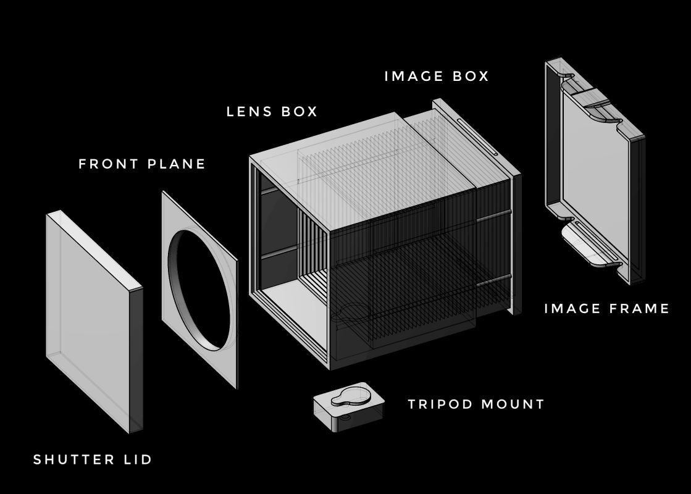
Printing the camera
Here are the parts you need to print. Click on them to download their files, and remember to use black filament. I suggest setting the horizontal expansion parameter in the slicer software to -0.01 or -0.02 mm to make boxes slide smoother.
Use tape or glue to fix the front plane to the lens box and the lens to the lens box.
Remember to mount the lens with the curved side inwards, towards the image box.
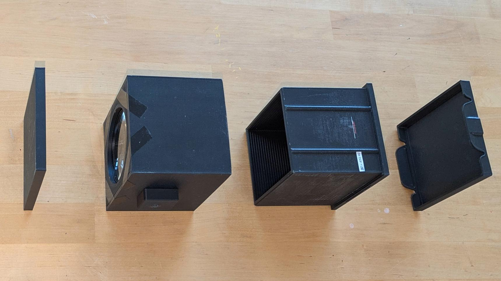
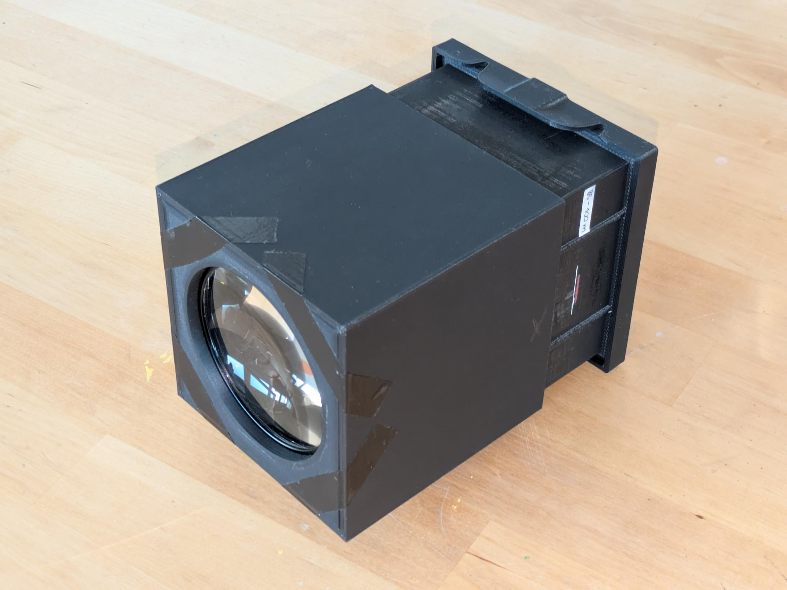
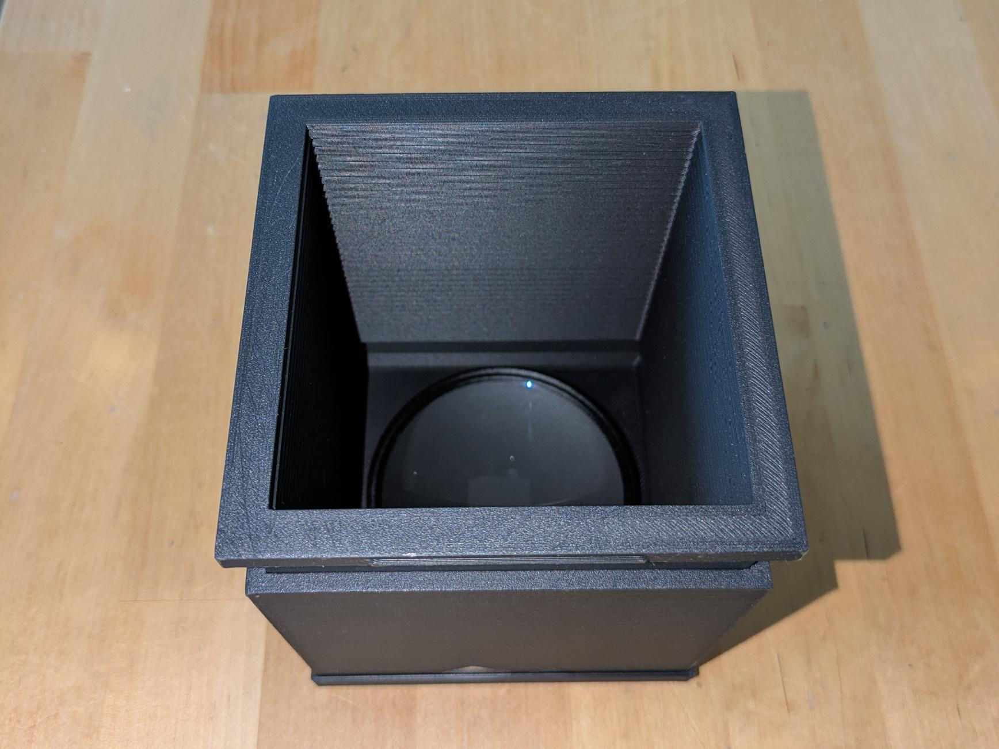
Taking a photo
1. Making the photo sheets
- Go in a room with little to no sunlight (ordinary artificial light is fine at any amount).
- Cut a 10x10 cm paper sheet.
- Mix two/three drops of solution A with the same amount of solution B in a small container, then stir.
- Paint unformly the sheet with the mixed solution.
- Let it dry until completely dry to the touch.
- Press it under some weight to straighten the surface.
After you're done, put it on top of the image frame, then make th latter click together with the image box.
2. Setting the camera
It's key to make the camera sit still. You can either use the tripod mount to attach it to a tripod or lay it on a flat surface.
Focus
Sliding the image box towards from the lens sets the focus farther, while sliding it away from the lens sets the focus closer.
You can't focus the image using your eyes in any way, remember that UV focuses differently, so do some tests to find an adequate focus distance and draw a mark to remember it for later.
There's a sweet spot in which the camera focuses to infinity, but finding it it's tricky because UV amplifies the distant haze a lot.
Exposure
To choose when to take a photo, you need to use a weather app/website to look at how the UV radiation is distributed throughout the current day.
These graphs give you a sense of how different the UV distribution in some places can be between summer and winter.
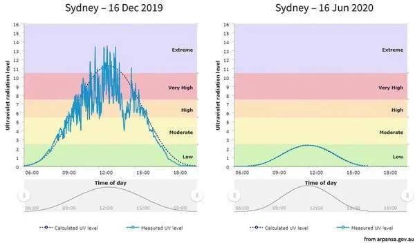
From my experience, this camera requires at least 1 hour under UV 6 and more under UV 5 and 4. Maybe under UV 3 and 2 it might produce an image too if exposed for hours.
3. Developing the photo
- Open the image frame and grab the negative. It will have deep blue tones in the bright areas and dark greens in the dark ones.
- Rinse it under running water to make the green wash away, leaving only white and prussian blue tones. Optionally you can add some vinegar to the water in a tray to speed up the developing.
- To get deeper blues you can add hydrogen peroxide (either spray it or add it in another tray), but you must be quick.
- Hang the negative and let it dry.
- Scan the negative and invert it using your favourite software.
Hopefully, you will get a negative like this one:
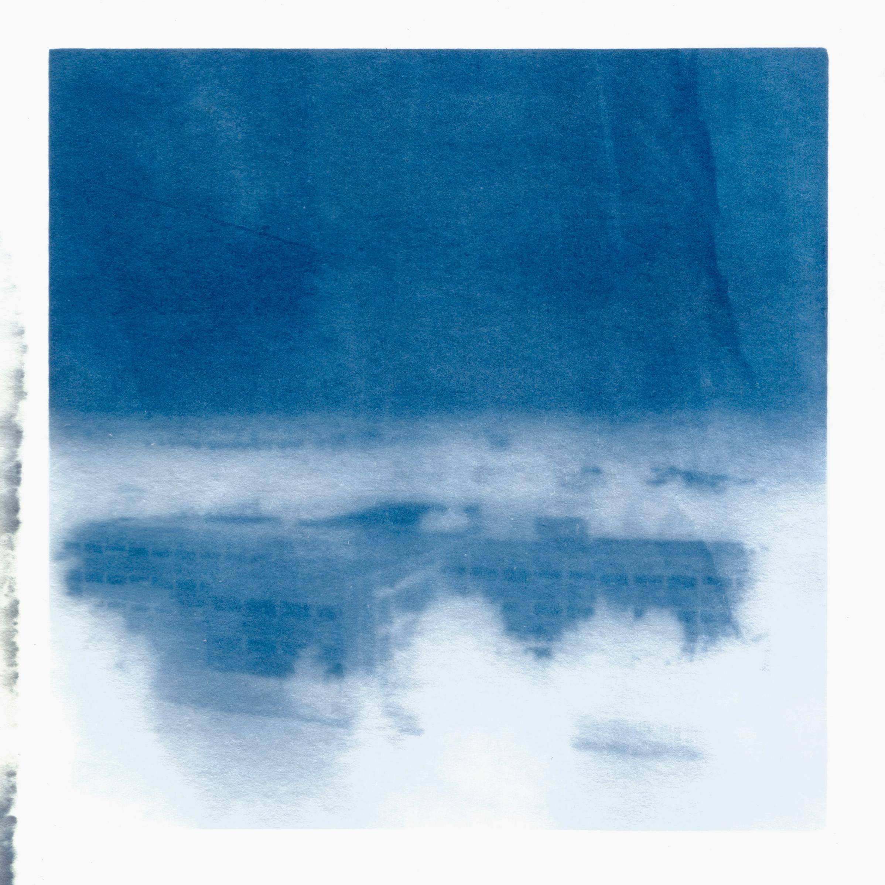